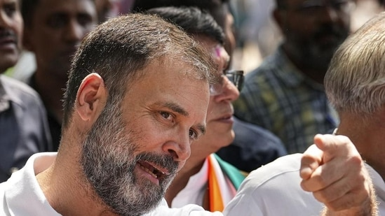
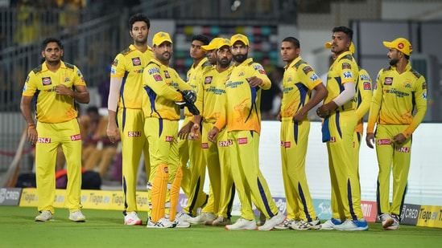
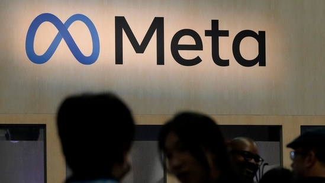
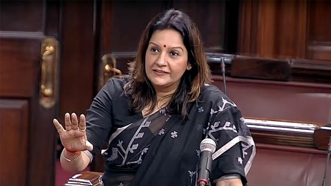

Rahul Gandhi's ‘bricks of ego’ tweet as 19 parties to skip new Parliament event

As 19 opposition parties decided to boycott the inauguration of the new Parliament complex by Prime Minister Narendra Modi, Congress leader Rahul Gandhi on Wednesday said not inviting President Droupadi Murmu to the event is an "insult" to the country's highest Constitutional post.
'Dhoni using full presence. Umpires laughing...': Hogg on CSK captain's time-waste tactic to let Pathirana bowl

Chennai Super Kings (CSK) captain MS Dhoni was involved in a controversial moment involving the umpires during the play-offs encounter against defending champions Gujarat Titans (GT). The incident saw mixed reactions on social media and former Australian spinner Brad Hogg too joined the bandwagon. However, he was among the ones, who were not very impressed with the umpires and adviced the officials to have a better control in the game.
Who was Vaibhavi Upadhyaya? Know all about the late Sarabhai vs Sarabhai actor
Actor Vaibhavi Upadhyaya, who is best known for the hit television serial Sarabhai vs Sarabhai: Take 2, died in a road accident in Himachal Pradesh. She died in the Banjar area of Kullu district in the state. (Also Read | Vaibhavi Upadhyaya's costars mourn her death: ‘Whole Sarabhai vs Sarabhai team is in a shock’)
Facebook owner Meta starts final round of layoffs

Meta Platforms Inc started carrying out the last batch of a three-part round of layoffs on Wednesday, according to a source familiar with the matter, as part of a plan announced in March to eliminate 10,000 roles.
Meta in March became the first Big Tech company to announce a second round of mass layoffs, after showing more than 11,000 employees the door in the fall. The cuts brought the company's headcount down to where it stood as of about mid-2021, following a hiring spree that doubled its workforce since 2020.
Uddhav camp's warning to BJP amid opposition's decision to skip Parliament event: ‘Whenever the image…’

Dismissing the ruling BJP's criticism of the opposition's decision to boycott the inauguration ceremony of the new Parliament building, Shiv Sena (Uddhav Balasaheb Thackeray) leader Priyanka Chaturvedi on Wednesday asserted that the photographs of the upcoming event will remind the country of the “insult of the President.” Chaturvedi, a member of the Upper House, said the pictures from the ceremony, with no opposition leaders in it, “would be called a symbol of dictatorship.”
“Those who are claiming damage to the opposition for not attending the inauguration of the Parliament are forgetting that history will bear witness to it,” the Sena (UBT) leader said in a tweet in Hindi.
“Whenever the picture of the new Parliament will be seen and no leader of the opposition will be found in it, then the country will remember the insult of the President,” she added.